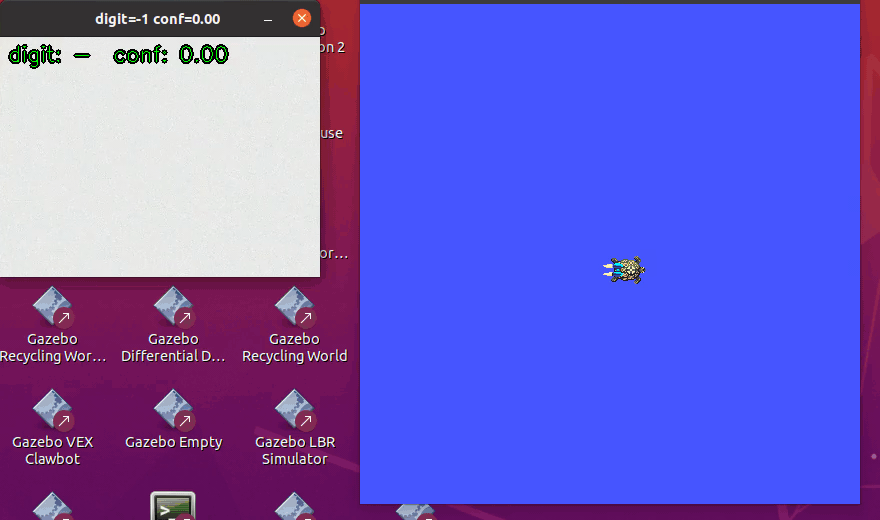
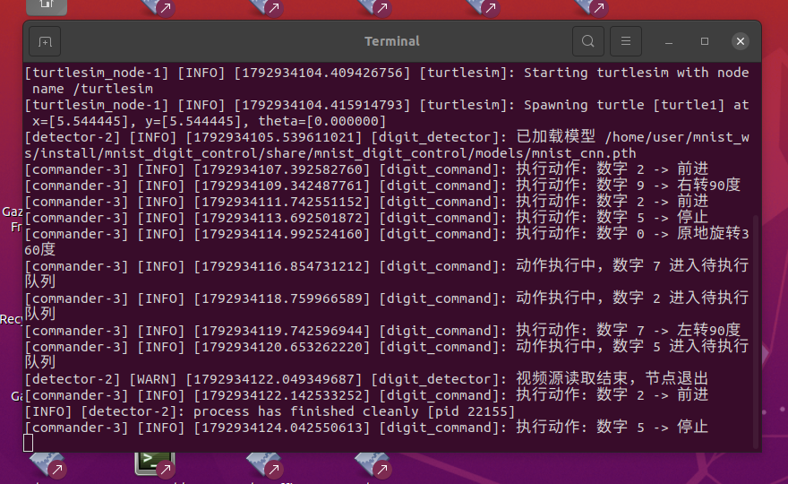
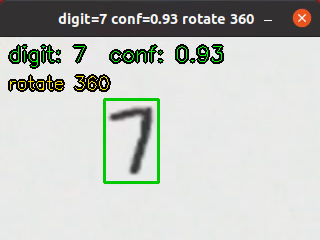
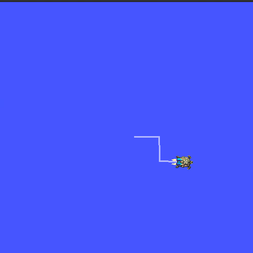
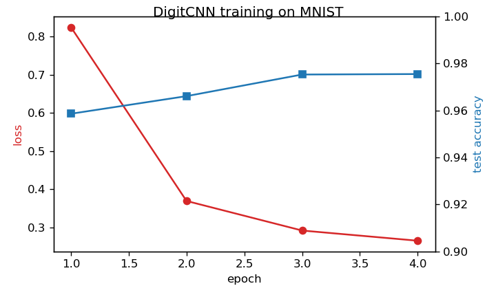
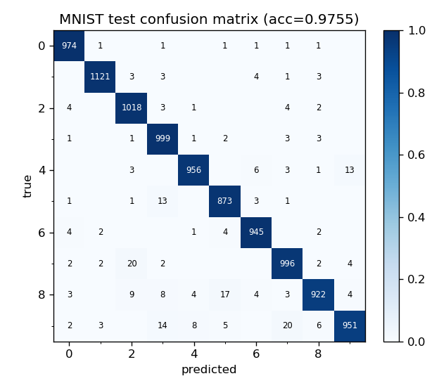
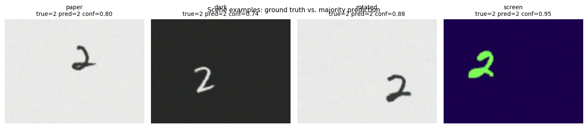
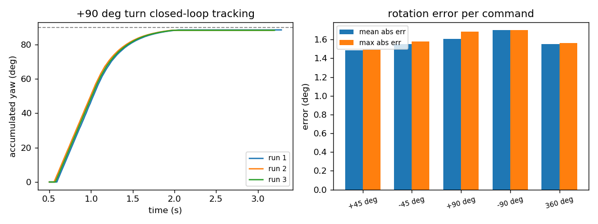

MNIST 手写数字视觉感知与机器人运动控制
任务定位
本模块对应课程任务 (2) 传感器感知及运动控制：使用传感器（摄像头/虚拟相机）获取的数据进行感知， 并用感知结果对机器人进行运动控制。感知算法为卷积神经网络（CNN），控制对象为 ROS2 自带的 turtlesim 二维小车机器人。整个模块不依赖任何物理仿真器（turtlesim 为 ROS2 自带组件）， 在 Ubuntu 20.04 + ROS2 Humble 上开箱即用。
效果演示（检测节点识别到数字后，控制节点经防抖确认驱动 turtlesim 执行对应动作）：

源码位置：src/ground/mnist_digit_control/（含 main.py 一键入口与 launch 文件）。
1. 系统架构
系统由两个 ROS2 节点组成，通过话题解耦，数据流如下：
(10 Hz)"] B -- "~/digit (Int32)" --> C["digit_command 控制节点
(20 Hz 状态机)"] B -- "~/confidence (Float32)" --> C C -- "/turtle1/cmd_vel (Twist)" --> D["turtlesim 乌龟机器人"] D -- "/turtle1/pose (Pose)" --> C B -- "~/debug_image" --> E["OpenCV 可视化窗口"]
| 话题 | 类型 | 频率 | 说明 |
|---|---|---|---|
/digit_detector/digit |
std_msgs/Int32 |
10 Hz | 当前帧识别数字，-1 表示未检测到 |
/digit_detector/confidence |
std_msgs/Float32 |
10 Hz | 对应的 softmax 置信度 |
/digit_detector/debug_image |
sensor_msgs/Image |
10 Hz | 叠加检测框的可视化图像 |
/mnist_digit_control/action |
std_msgs/String |
事件 | 当前执行动作名（detector 叠加显示） |
/turtle1/cmd_vel |
geometry_msgs/Twist |
20 Hz | 速度指令 |
/turtle1/pose |
turtlesim_msgs/Pose |
62.5 Hz | 乌龟位姿（旋转闭环反馈） |
检测节点在 OpenCV 窗口中实时显示识别结果；控制节点把稳定确认后的数字映射为运动动作：
| 数字 | 动作 | 数字 | 动作 |
|---|---|---|---|
| 2 | 前进 | 8 | 后退 |
| 4 | 左移 | 6 | 右移 |
| 7 | 左转 90° | 9 | 右转 90° |
| 1 | 左转 45° | 3 | 右转 45° |
| 0 | 原地旋转 360° | 5 | 停止 |
2. 运行环境（实测）
| 项目 | 版本 |
|---|---|
| 系统 | Ubuntu 20.04.6 LTS（VMware 虚拟机，6 核 / 7.7 GB） |
| ROS2 | Humble |
| Python | 3.8.10 |
| PyTorch | 2.4.1+cpu（仅训练与推理） |
| OpenCV / numpy | 4.5.2 / 1.21.0（系统 ROS 自带） |
3. 运行步骤
3.1 获取源码与安装依赖
mkdir -p ~/mnist_ws && cd ~/mnist_ws
git clone https://github.com/OpenHUTB/ros2.git src # 或仅复制 src/ground/mnist_digit_control
cd ~/mnist_ws/src/ground/mnist_digit_control
# PyTorch CPU 版（约 190 MB）；OpenCV/numpy 使用系统 ROS 自带版本
python3 -m pip install -r requirements.txt --index-url https://download.pytorch.org/whl/cpu
3.2 构建（colcon build）
cd ~/mnist_ws
source /opt/ros/humble/setup.bash
colcon build --packages-select mnist_digit_control
source install/setup.bash
3.3 生成演示场景视频（首次运行前）
仓库按约定不入库视频类二进制文件，4 个场景视频用以下命令一键重新生成
（自动下载 MNIST 并合成，约 1~2 分钟，产物在 src/ground/mnist_digit_control/videos/）：
cd ~/mnist_ws/src/ground/mnist_digit_control
python3 main.py scenes
训练好的 CNN 权重 models/mnist_cnn.pth 已随仓库提交，无需重新训练即可运行；
如需复现训练过程，执行 python3 main.py train（见 4.1 节）。
3.4 一键启动
# 方式一：main.py 一键入口（首次自动构建）
cd ~/mnist_ws/src/ground/mnist_digit_control
python3 main.py
# 方式二：launch 启动
ros2 launch mnist_digit_control mnist_digit_control.launch.py
# 指定其他场景视频 / 真实摄像头：
ros2 launch mnist_digit_control mnist_digit_control.launch.py \
source:=video source_path:=/abs/path/scene_rotated.mp4
ros2 launch mnist_digit_control mnist_digit_control.launch.py source:=webcam
launch 文件会同时启动 turtlesim_node、detector、commander 三个可执行项，并自动定位包内的
模型权重与默认场景视频（优先 scene_paper.mp4）。
3.5 运行现象
启动后约 2~3 秒（PyTorch 导入）出现两个窗口：左侧为检测节点可视化，右侧为 turtlesim。
以默认 scene_paper.mp4 视频源为例，完整运行日志如下（终端截图）：

关键日志解读：
数字指令控制节点就绪，等待识别数字……：控制节点 20 Hz 状态机开始运行；已加载模型 …/mnist_cnn.pth：CNN 权重加载完成，检测节点开始以 10 Hz 处理视频帧；执行动作: 数字 2 -> 前进：数字连续 6 帧稳定且置信度 ≥ 0.7，触发动作；动作执行中，数字 7 进入待执行队列：360° 旋转等长动作执行期间到达的稳定数字被排队， 动作结束后依次执行（详见 5.4 节）；视频源读取结束，节点退出：视频播放完毕，检测节点干净退出，控制节点继续执行完队列后回到空闲态。
检测节点特写：绿色框为数字外接矩形（绿色 = 置信度过门限，橙色 = 未过门限）， 下方橙色文字为控制节点反馈的当前动作名：

一段演示结束后 turtlesim 画出完整运动轨迹（前进 → 右转 90° → 前进 → 停止 → 360° 旋转 → 左转 90° → 前进 → 停止）：

3.6 停止与清理
终端按 Ctrl+C 退出 launch（SIGINT 会传播到全部三个节点）；异常退出时可清理残留进程：
pkill -f 'ros2 launch'
pkill -f 'turtlesim_node'
pkill -f 'digit_detector|digit_command'
4. 训练与离线评价步骤
4.1 训练 CNN
cd ~/mnist_ws/src/ground/mnist_digit_control
python3 main.py train # 自动下载 MNIST 到 data/mnist/ 并训练
超参数与训练曲线（4 epoch，约 31 s，CPU）：
| 参数 | 值 | 参数 | 值 |
|---|---|---|---|
| 优化器 | Adam | batch size | 128 |
| 学习率 | 0.001 | 随机种子 | 42 |
| 参数量 | 206,922 | 权重文件 | models/mnist_cnn.pth（约 0.8 MB） |

测试集准确率逐 epoch 为 95.86% → 96.61% → 97.53% → 97.55%。混淆矩阵显示主要混淆集中在 4/9、7/2、9/4 等字形相近类别：

4.2 生成多场景虚拟相机视频
测试虚拟机没有摄像头设备，scripts/make_scene_videos.py 用 MNIST 测试集数字合成 4 个场景的
"虚拟相机"视频，模拟真实拍摄条件（背景噪声、模糊、随机位置、旋转、极性反转）：
python3 main.py scenes
| 场景 | 模拟条件 |
|---|---|
scene_paper.mp4 |
纸质背景 + 深色墨迹数字 |
scene_dark.mp4 |
深色背景 + 白色数字（极性反转） |
scene_rotated.mp4 |
数字随机旋转 ±10°~25° |
scene_screen.mp4 |
深蓝屏幕背景 + 亮绿色数字 |
每个视频按固定指令序列 [2,9,2,5,0,7,2,5] 依次显示数字共 16.4 s，并写出帧区间真值
artifacts/scene_ground_truth.json。视频开头有 1.2 s 纯背景"空白段"——系统实际运行时节点间
DDS 互相发现需要时间，若视频第 0 帧就出现数字，最早的识别结果可能在对端订阅建立前发布而丢失。

4.3 多场景离线评价
python3 main.py eval
4.4 控制精度评价
scripts/evaluate_control.py 让评价节点扮演"理想检测器"（以置信度 0.95 发布指定数字），
对每种动作重复 3 次并读取 /turtle1/pose 测量实际运动：
python3 scripts/evaluate_control.py
5. 原理与公式
5.1 图像预处理：Otsu 自适应二值化与 MNIST 归一化
真实相机画面背景复杂，检测前需要把数字从背景中分割出来。设灰度图像素灰度 。
极性自动判断：用图像四周 5 像素的环带均值 估计背景亮度。若 （浅背景深数字），
用 THRESH_BINARY_INV（前景取 1）；否则（深背景亮数字，如白板字、屏幕字）用 THRESH_BINARY。
这使得同一个网络可以同时识别"纸上黑字"与"屏幕亮字"。
Otsu 大津法：遍历阈值 ，把像素分为前景/背景两类，最大化类间方差：
其中 为两类像素占比， 为两类灰度均值。随后用 3×3 开运算去除孤立噪点， 取最大连通域外接矩形（面积 < 60 像素视为无目标，返回 -1）。
MNIST 风格归一化：MNIST 训练样本是"白字黑底、数字笔画居中于 20×20、整体画布 28×28"的格式， 推理输入必须与训练分布一致。把裁剪块统一为白字黑底（若亮像素占多数则反相）， 补成正方形后缩放到 20×20，居中粘贴到 28×28 黑色画布上。
5.2 卷积神经网络
网络结构（输入 ）：
| 层 | 输出尺寸 | 说明 |
|---|---|---|
| Conv2d(1→16, 3×3, pad=1) + ReLU | 16×28×28 | 提取边缘/笔画纹理 |
| MaxPool2d(2) | 16×14×14 | 下采样 |
| Conv2d(16→32, 3×3, pad=1) + ReLU | 32×14×14 | 组合成局部形状 |
| MaxPool2d(2) | 32×7×7 | 下采样 |
| Flatten + Linear(1568→128) + ReLU + Dropout(0.25) | 128 | 分类头 |
| Linear(128→10) | 10 | 类别 logits |
卷积层：输出特征图上每个位置是输入局部感受野与卷积核的内积加偏置：
ReLU 激活引入非线性：。
最大池化取 2×2 窗口内最大值，使特征对小的平移鲁棒： 。
输出层 softmax 把 10 维 logits 归一化为概率：
训练损失为交叉熵，配合 Adam 优化器（一阶/二阶矩自适应学习率）最小化：
CPU 上单帧前向推理耗时约 0.2 ms（实测见 8.1 节），远快于 10 Hz 的处理节拍。
5.3 指令防抖与状态机
单帧识别不可靠（噪声帧、过渡帧会瞬间误识），控制节点用滑动窗口多数投票确认指令：
维护最近 stable_frames=6 个识别结果，仅当窗口全为同一数字 且置信度 时触发。
状态机如下：
且 ≠ 上次已执行数字 action --> cooldown: 动作完成（时长到/角度到位） cooldown --> action: 待执行队列非空 cooldown --> idle: 冷却0.8s结束 idle --> idle: 不满足触发条件
两条防重复/防丢指令规则（对应源码 _on_digit）：
- 边沿触发：
last_executed记录上次触发的数字，同一数字持续出现只执行一次； 连续 ≥ 3 帧未检测到数字（miss_count ≥ 3）后复位，允许同一数字再次触发。 - 待执行队列：动作执行期间（
state == "action"）到达的稳定数字进入pending队列， 冷却结束后立即执行，避免 360° 旋转这类约 4.8 s（含冷却）的长动作吞掉期间到来的指令。
5.4 旋转闭环 P 控制
平移动作为 1 s 定时长的开环速度脉冲（turtlesim 体坐标平移）。旋转动作则基于位姿反馈闭环。 设目标转角 （如 ±45°、±90°、360°），每拍累加乌龟实际转角并计算误差：
其中 wrap 把角差展开到 ，保证 90° 以内的转角走最短方向：
比例（P）控制律，输出限幅到 ：
当 （）连续 3 拍成立视为到位。 注意到位后必须显式发布零速指令：turtlesim 会保持最后一次收到的速度继续运动， 若验证帧不发指令，乌龟会冲过容差并在极限环附近震荡。
5.5 turtlesim 运动学
turtlesim 是二维差速式运动学模型，收到 后按当前朝向积分位置：
turtlesim 以约 62.5 Hz 更新位姿并发布 /turtle1/pose，控制节点以 20 Hz 发布速度指令。
6. 算法流程
6.1 检测节点（10 Hz 定时回调）
6.2 控制节点（20 Hz 状态机 tick）
且 conf ≥ 0.7 且 d ≠ last_executed?} C -- 是 --> E[启动动作 last_executed=d] C -- 否 --> B B -- action --> F{动作类型?} F -- translate --> G[发体坐标速度
1s 后发 0 速并进入 cooldown] F -- rotate --> H[累加实际转角 计算 e_k] H --> I{ abs e < 0.03 rad
连续3拍? } I -- 是 --> J[显式发 0 速 进入 cooldown] I -- 否 --> K[发 ω = clip 3.0·e ±2.0] B -- cooldown --> L{冷却时间到?} L -- 是 --> M{pending 队列非空?} M -- 是 --> N[出队并启动动作] M -- 否 --> O[state = idle]
7. 源码解析
完整源码见 src/ground/mnist_digit_control/，
这里解析三个核心片段。
7.1 预处理：极性判断 + Otsu（preprocess.py::extract_digit）
# 用边缘一圈估计背景亮度，判断极性
border = np.concatenate([
frame_gray[0:5, :].ravel(), frame_gray[-5:, :].ravel(),
frame_gray[:, 0:5].ravel(), frame_gray[:, -5:].ravel(),
])
bg_mean = float(border.mean())
# 浅背景深数字 -> 前景取反（INV）；深背景亮数字 -> 直接取前景
flags = cv2.THRESH_BINARY_INV + cv2.THRESH_OTSU if bg_mean > 127 else cv2.THRESH_BINARY + cv2.THRESH_OTSU
_, binary = cv2.threshold(frame_gray, 0, 255, flags)
cv2.threshold 的阈值参数传 0 时由 THRESH_OTSU 标志自动计算 5.1 节的最优阈值 。
之后开运算、取最大连通域、外接矩形四周扩边 10%（给笔画留边），交由
_normalize_mnist 完成 20×20 居中归一化。
7.2 CNN 推理（detector_node.py::tick）
digit28, box = extract_digit(gray) # 预处理得到 28x28 输入
digit, conf = -1, 0.0
if digit28 is not None:
x = torch.from_numpy(digit28.astype(np.float32)[None, None] / 255.0)
with torch.no_grad():
logits = self.model(x)
probs = torch.softmax(logits, dim=1)[0]
conf, digit = float(probs.max()), int(probs.argmax())
self.pub_digit.publish(Int32(data=digit)) # -1 表示未检测到
self.pub_conf.publish(Float32(data=conf))
输入张量归一化到 （与训练一致），no_grad 关闭梯度记录以省内存；
digit=-1 与"未过置信门限"在下游语义不同：前者表示"目标消失"（用于复位防重复锁），
后者表示"看到了但不确定"。
7.3 旋转闭环与零速保持（command_node.py::_step_action）
dtheta = wrap_angle(self.pose.theta - self.yaw_prev) # 最短角差展开
self.yaw_prev = self.pose.theta
self.yaw_accum += dtheta # 累计实际转角
err = target - self.yaw_accum
if abs(err) < self.tol:
self.on_target_ticks += 1
# 必须显式发布 0 速：turtlesim 会保持上一次速度继续转，
# 若验证帧不发布指令，误差会在容差附近形成极限环震荡
self._publish_twist(0.0, 0.0, 0.0)
if self.on_target_ticks >= 3:
return False # 动作完成
else:
self.on_target_ticks = 0
w = max(-self.w_max, min(self.w_max, self.kp * err)) # P 控制律 + 限幅
self._publish_twist(0.0, 0.0, w)
8. 多场景测试与性能评价
指标定义
- 原始识别准确率：每段数字显示区间内，帧级识别结果的众数等于真值的段数占比（16 帧/段）；
- 门限后准确率：众数按"置信度 ≥ 0.7 的帧"重新投票后的准确率（低于门限记为 -1，即拒绝识别）；
- 检测率：段内有效前景帧占比（未把数字分割出来的帧记为漏检）；
- 平均置信度 / 单帧推理耗时：段内所有有效帧的均值，耗时在 6 核 VM 的 CPU 上测得。
8.1 多场景识别性能
4 个场景 × 8 段数字，共 32 段、512 个评价帧（每段 16 帧，scene_eval.json）：
| 场景 | 原始识别准确率 | 门限后准确率 | 检测率 | 平均置信度 | 单帧推理耗时 (ms) |
|---|---|---|---|---|---|
| scene_paper（纸面黑字） | 100.00% | 100.00% | 100.00% | 0.894 | 0.20 |
| scene_dark（深底白字） | 87.50% | 87.50% | 100.00% | 0.887 | 0.18 |
| scene_rotated（旋转 ±10°~25°） | 100.00% | 87.50% | 100.00% | 0.849 | 0.21 |
| scene_screen（屏幕亮字） | 100.00% | 100.00% | 100.00% | 0.962 | 0.22 |
| 平均 | 96.88% | 93.75% | 100.00% | 0.898 | 0.20 |
失败案例分析（各 1 段误识）：
scene_dark的数字 9 被识别为 7，段平均置信度仅 0.60（低于 0.7 门限），门限机制正确拒绝了该误识 （gated_majority = -1），系统不会执行错误动作——这正是置信门限的设计目的；scene_rotated的数字 5 原始众数碰巧正确但置信度仅 0.58，同样被门限拒绝，损失一次正确触发。 旋转是本模型的主要弱点（训练集 MNIST 数字接近直立），后续可通过训练数据随机旋转增广改善。
8.2 控制精度
evaluate_control.py 对每种动作重复 3 次（共 27 次动作，全部正常完成）：
| 动作 | 标称值 | 实测（3 次均值 ± 最大偏差） |
|---|---|---|
| 右转 45° | -45.0° | 误差 ≤ 1.70° |
| 左转 45° | +45.0° | 误差 ≤ 1.70° |
| 右转 90° | -90.0° | 误差 ≤ 1.70° |
| 左转 90° | +90.0° | 误差 ≤ 1.70° |
| 原地旋转 360° | 360.0° | 误差 ≤ 1.70° |
| 前进/后退/左移/右移 | 位移 1.0 | 0.944 ~ 0.992 |
旋转闭环在 45°/90°/360° 三种目标下稳态误差都不超过 1.70°（即容差 0.03 rad）； 平移位移偏差约 1%~6%，来自 turtlesim 的 62.5 Hz 离散积分与动作启动延迟， 属开环动作的预期精度。下图左为连续 3 次"左转 90°"的航向跟踪曲线（约 1.8 s 平滑收敛、无超调）， 右为各动作误差统计：

8.3 演示实测（GIF 录制对应的完整闭环）
默认 scene_paper.mp4 源下指令序列 [2,9,2,5,0,7,2,5] 的 8/8 个指令全部触发执行
（见 3.5 节终端日志）。其中 360° 旋转（约 4.8 s）执行期间到来的数字 7、2、5 被待执行队列
保存并在动作结束后依次执行，无指令丢失。
9. 已知问题与调参记录
调试过程中发现并修复的三个典型问题，供复现者参考：
- 长动作吞指令 → 待执行队列。最初 360° 旋转执行期间到来的数字会被直接丢弃。
根因是状态机在
action态只执行当前动作、不缓存新指令；加入pending队列后（5.3 节）， 长动作期间的稳定识别结果在冷却结束后依次执行。 - turtlesim 速度保持 → 显式零速。turtlesim 收到速度指令后会持续按该速度运动直到下一条指令。 旋转到位后的"验证帧"若不发指令，乌龟以 冲过容差再被拉回，形成极限环； 在到位验证帧显式发布 后消除。
- DDS 发现延迟 → 视频起始空白段。launch 同时拉起三个节点，早期发布的识别结果可能在 控制节点订阅建立前丢失（表现为第一个指令偶发不触发）。为虚拟相机视频增加 1.2 s 起始空白段后， 第一个指令稳定触发。
另有一处显示限制：OpenCV 的 putText 不支持中文，因此叠加在画面上的动作名使用英文
（如 rotate 360），ROS 日志仍输出中文动作名。
10. 大模型使用声明
本模块代码与文档在 OpenHUTB 课程任务要求下使用大模型辅助编写，作者已逐行审查、 在 Ubuntu 20.04 + ROS2 Humble 虚拟机中实际运行验证（含训练、多场景评价、控制精度评价与 GIF 录制）， 并对提交内容负全部责任。